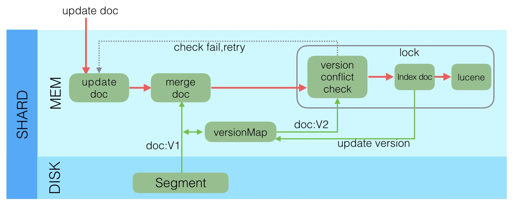

Ch06-Elasticsearch 之 Update
August 21, 2021
更新操作也是写操作。Elasticsearch 在创建新文档时，Elasticsearch 将为该文档分配一个版本号。对文档的每次更改都会产生一个新的版本号。当执行更新时，旧版本在.del 文件中被标记为已删除，并且新版本在新的分段中编入索引。旧版本可能仍然与搜索查询匹配，但是从结果中将其过滤掉。
1. Update 流程 #

- 收到 Update 请求后，从 Segment 或者 TransLog 中读取同 id 的完整 Doc，记录版本号为 V1。
- 将版本 V1 的全量 Doc 和请求中的部分字段 Doc 合并为一个完整的 Doc，同时更新内存中的 VersionMap。获取到完整 Doc 后，Update 请求就变成了 Index 请求。
- 加锁。
- 再次从 versionMap 中读取该 id 的最大版本号 V2，如果 versionMap 中没有，则从 Segment 或者 TransLog 中读取，这里基本都会从 versionMap 中获取到。
- 检查版本是否冲突 (V1==V2)，如果冲突，则回退到开始的“Update doc”阶段，重新执行。如果不冲突，则执行最新的 Add 请求。
- 在 Index Doc 阶段，首先将 Version + 1 得到 V3，再将 Doc 加入到 Lucene 中去，Lucene 中会先删同 id 下的已存在 doc id，然后再增加新 Doc。写入 Lucene 成功后，将当前 V3 更新到 versionMap 中。
- 释放锁，部分更新的流程就结束了。